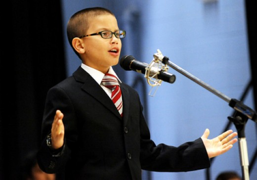
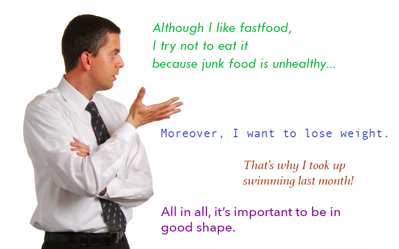

IELTS Speaking Tips
A lot of candidates who take IELTS Speaking test find this section the hardest one because it involves face-to-face communication. But in fact, IELTS Speaking is the easiest section of IELTS to improve your score. You may think, “But how? Interviews are so spontaneous! I just won’t have enough time to plan a good answer. Moreover, I’ll be worrying…”.
It’s true, speaking interviews are spontaneous. But all test-takers are worrying and don’t have much time to plan their answers. And examiners are used to that, so they don’t expect you to speak like an orator. They don’t even expect you to give very logical and structured answers! You’re only tested on your ability to:
- speak fluently and without hesitation,
- use various vocabulary,
- avoid grammar mistakes,
- pronounce words well.
You can learn more about how IELTS Speaking is scored.
So you can band 8 and more on IELTS Speaking by practising and learning vocabulary.
But you can also increase your score by following these simple IELTS Speaking tips and tricks. Here we’ve gathered top 10 IELTS Speaking tips to increase your IELTS Speaking score:
-
Be fluent and liberated
Speak fluently and spontaneously. You will gain more points. Don't worry too much about using clever vocabulary, it's more important to be fluent. But also don't speak too quick and mind your grammar. You should find a "healthy balance" between speaking too quickly and making long pauses.
-
Practise answering sample questions
Typically, you will be asked about everyday topics, such as work, studies, sport, family and so on. So you should try answering IELTS Speaking questions before the exam. You will be surprised how simple they are! You just need to learn appropriate vocabulary and understand what answers you will give.
-
Ask the question again if you need to
Don't be shy, if you want to clarify something. You will not lose points for asking the examiner.

-
Be emotional!
Speak with emotions. Nothing separates the experienced speaker from beginners as tone of the speech. Express your feelings like you would do using your native language.
-
Extend your speech
Try to speak at least more than the examiner. If you are asked a question using one sentence, respond with two or more. And never give short, uncommunicative replies:
Examiner: Do you do any sport?
You: No, I don't like sports... [Don't stop there!] I'm not a very active person and I've never liked P.E. in school. But I like playing intellectual games instead. For example, I find chess very interesting.

-
Be coherent
Use linking words and structures. Words and phrases like however, nevertheless, all in all, moreover will enrich your speech.
-
Give yourself time to think
If you are unsure how to answer the question, you can give yourself a bit more time to think by using this tip. First of all, you can say: "That's a tricky question...", "I've never thought about that before..." or "That's an interesting question...". This way you'll have some extra time to plan your answer.
You can also reformulate the question:
Examiner: What was your favourite book in the childhood?
You: What book did I like as a child? Let me see... Made a mistake? Don't panic!
If you made a mistake - don't panic! Try to correct yourself as smoothly as possible. And if you can't - just continue speaking, you won't lose many points for a few mistakes.
-
Make a good first impression
Look good, smell good and feel good. Be confident. Although it may not seem very important, a strong first impression will go a long way.
-
Don't learn answers by heart
Examiners are able to determine whether you speak freely or you memorized the answer before your interview. Learning full scripts is a bad idea. Instead, it is much better to learn separate words and collocations and adopt them in your speech.